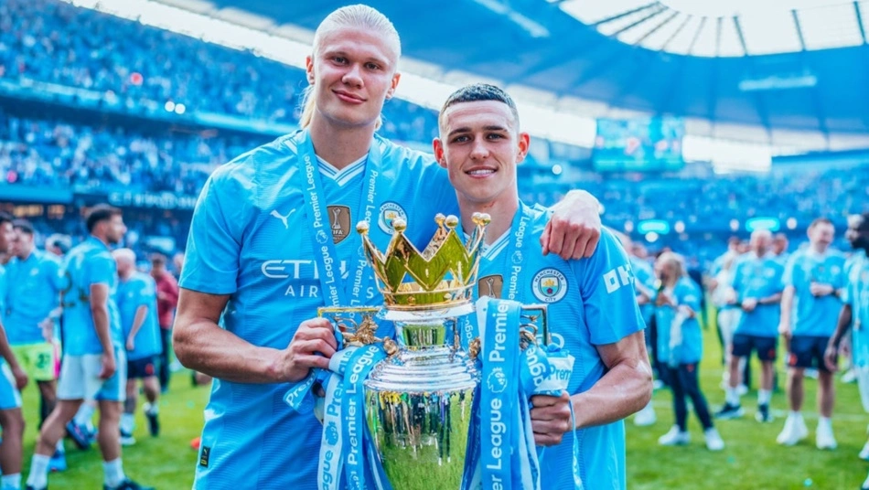
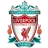
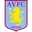
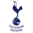
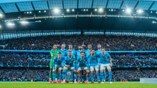
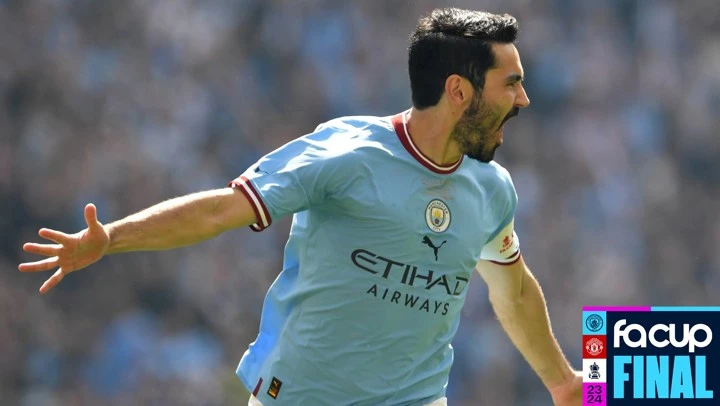
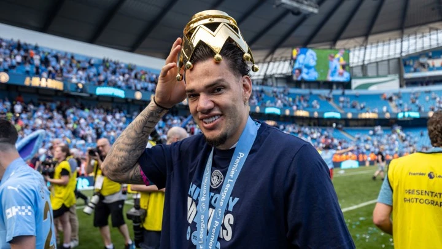
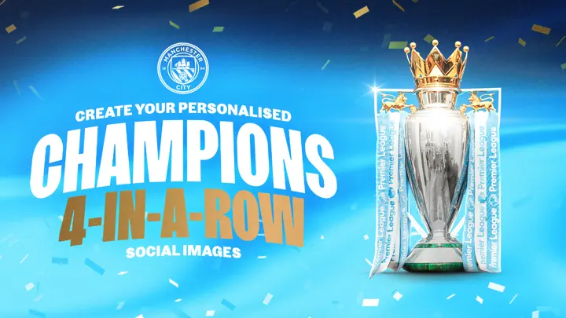
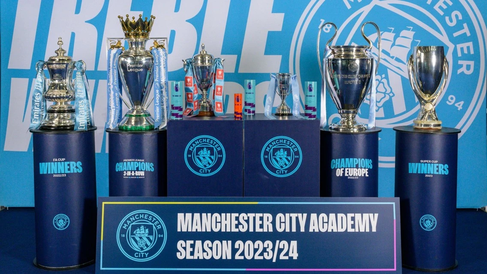
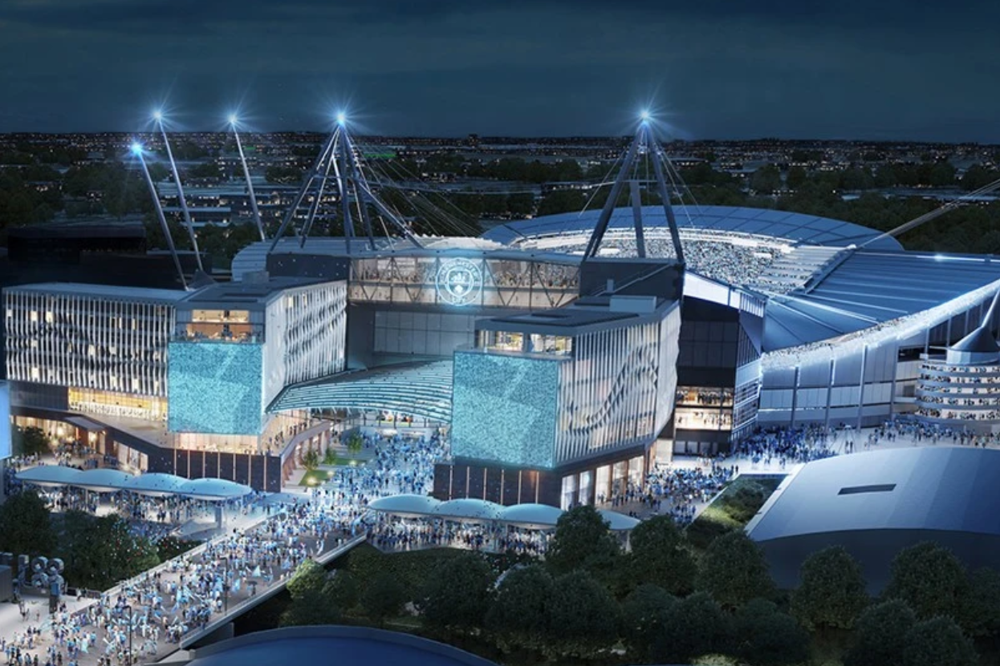

Manchester Siti
Futbol Klubi Manchester shahrida joylashgan ingliz professional futbol klubi boʻlib, Angliya futbolining eng yuqori ligasida ishtirok etadi. 1880-yilda "Sent-Mark" (West Gorton) nomi bilan asos solingan boʻlib, ular 1887-yilda "Ardwick" assotsiatsiyasi va 1894-yilda "Manchester Siti" futbol klubiga aylanishgan. Klubning uy maydoni Manchester sharqidagi „Siti of Manchester“ stadioni boʻlib, ular 2003-yilda u yerga koʻchib oʻtishgan. „Manchester Siti“ 1894-yilda, hozirgi nomi bilan birinchi mavsumda oʻzining osmon moviy uy liboslarini qabul qilgan[4]. Oʻz tarixi davomida klub toʻqqizta liga gʻolibi, yettita Angliya kubogi, sakkizta Liga kubogi, oltita FA Community Shields, bir UEFA Chempionlar Ligasi, bir marta Yevropa kubogi gʻoliblari kubogi va bir marta UEFA Superkubogini qoʻlga kiritgan.
MANCHESTER CITY TARIXI
Bugungi kunda „Manchester Siti“ deb nomlangan futbol klubining asoschisi 1855-yilda tugʻilgan. Anna Konnell Harrogitdagi Ruhoniy Pyotr I Artur Konnelning qizi edi. 1865-yilda uning otasi Manchesterning eng kam taʼminlangan mahallalaridan biri boʻlgan Gʻarbiy Gortondagi sent-Mark anglikan cherkovining rektori lavozimini egalladi. Ishsizlarning koʻpligi Konnellni 1879-yil yanvar oyida cherkovda bepul ovqat xonasi va mahalliy kambagʻallarga yordam berish uchun maxsus fond tashkil etishga undadi.
Anna otasining ishini jamoat ishlarida ishtirok etish bilan qoʻllab-quvvatladi. Darhaqiqat, oʻsha paytda Gʻarbiy Gorton qashshoq aholisi va dahshatli sanitariya sharoitlari boʻlgan aholi koʻp boʻlgan hudud edi. Koʻplab shahar aholisi spirtli ichimliklarni suiisteʼmol qilishgan, bu esa jinoyatchilikning koʻpayishiga olib kelgan. Anna Konnell jamiyatning maʼnaviy holatini yaxshilash vositasini qidirdi. Shunday qilib, 1880-yil noyabr oyida u ikkita cherkov boshligʻi va bir vaqtning oʻzida Bruks temir zavodi uyushmasi aʼzolari Uilyam Bistov va Tomas Gudbeer bilan birgalikda bir nechta sport klublarini tashkil etdi. Shu jumladan 1875-yilda Sankt Mark cherkovining kriket jamoasi, uning uchta oʻyinchisi Valter Chou, Edvard Kitchen va Uilyam Bistovning oʻzi keyinchalik futbolchi boʻlishdi. Manchester arxdeakoni Anna Konnelning ishini yuqori baholadi va uning keyingi faoliyatiga baraka berdi.
Shu bilan birga, qishda Gʻarbiy Gorton erkaklari jamoaviy sport bilan shugʻullanish imkoniyatiga ega emasligi aniq boʻldi. Shuning uchun 1880-yil noyabr oyida Anna Konnell, Bistou va Gudbeer Sent-Mark cherkovining „Sent-Marks (West Gorton)“nomli futbol jamoasini tuzdilar. Artur Konnell qora koʻylak va oq koʻylak kiygan jamoaning birinchi prezidenti boʻldi. Birinchi qayd etilgan oʻyinni jamoa 1880-yil 13-oyabrda mclesfield cherkov jamoasiga qarshi oʻtkazdi, 1:2 hisobida magʻlubiyatga uchradi. Aytgancha, jamoa oʻz faoliyatining birinchi mavsumida faqat bir marta gʻalaba qozonishga muvaffaq boʻldi-1881-yil mart oyida Sharqiy Manchesterning „Stalibrij Klarens“ jamoasi magʻlub boʻldi.
1884-yilda Gorton assotsiatsiyasi futbol klubi deb qayta nomlandi. Shu bilan birga, Uilyam Bistov asl shaklni — oq xochli qora koʻylaklarni ixtiro qildi. 1887-yil avgust oyida klub yangi stadionga koʻchib oʻtdi hayd Road va Manchester tumani nomi bilan yangi nom Ardvik oldi. Ikki yil oʻtgach, klub 1000 tomoshabinga moʻljallangan tribuna qurdi. 1891-yilda esa Alyans-ligaga aʼzo boʻlib, ikki yil ketma-ket Manchester Kubogini qoʻlga kiritdi. 1892-yil aprel oyida ikkinchi ingliz divizionining shakllanishi munosabati bilan futbol Ligasi „Aruvik“ ni ushbu turnirga kiritishga qaror qildi. 1892/93-yilgi mavsum yakunlariga koʻra, jamoa 12 ishtirokchidan 5-oʻrinni egalladi.
Keyingi yili ikkinchi divizionga „Nyuton xit“ tushdi, keyinchalik Manchester United F.C. deb nomlandi, bu esa Manchesterning vakolatxonasini ikki klubga koʻpaytirdi. Oʻsha paytda „Ardvik“ ning yangi tayinlangan menejeri Joshua Parbi klub uchun yangi nom taklif qildi „Manchester Siti“. Uning soʻzlariga koʻra, bu jamoaning shahar aholisining barcha qatlamlari uchun ahamiyatini taʼkidlaydi. Boshqaruvchilar qoʻmitasi rozi boʻldi. Va 1894-yildan beri" Manchester Siti " nomi oʻzgarishsiz qolmoqda.
Shu bilan birga, shahar aholisi tomonidan jamoani qoʻllab-quvvatlash juda tez oʻsdi. Shunday qilib, 1895-yil Juma kuni boʻlib oʻtgan oʻyinda „Siti“ 30 mingga yaqin tomoshabinni yigʻdi. Deyarli har bir oʻyinga 20 ming kishi kelib, jamoaga gʻorlar va Davullar yordamida shovqin qoʻllab-quvvatladi. Baʼzi tomoshabinlar maxsus kiyimda kelishni afzal koʻrishdi, shu bilan ular Manchester jamoasining faol muxlislari sifatida ajralib turishdi.



| NO | LOGO | CLUB NAME | GA | GD | Pts |
|---|---|---|---|---|---|
| 1 | MANCHESTER CITY | 34 | 62 | 91 | |
| 2 | Arsenal | 29 | 62 | 89 | |
| 3 |  | Liverpool | 41 | 45 | 82 |
| 4 |  | Aston Villa | 61 | 15 | 68 |
| 5 |  | Tottenham Hotspur | 61 | 13 | 66 |
Four City players named in Premier League Fan Team of the Season

City players in Euro 2024 and Copa America squads

GUNDOGAN: I WILL BE CHEERING THE BOYS ON!

Ederson: I give my everything for City!

Create your own four-in-a-row Premier League champions social media images

TRIO RECOGNISED AT ACADEMY AWARDS EVENING

Etihad Stadium
«Etihad» stadioni — Angliyaning Manchester shahridagi oʻyingoh. Manchester Cityning uy stadioni. Angliya Premyer-ligasidagi toʻrtinchi va Buyuk Britaniyadagi sakkizinchi yirik stadion.
Stadionning tamal toshi 1999-yil dekabr oyida bosh vazir Anthony Blair tomonidan qoʻyilgan boʻlib, qurilish ishlari 2000-yil yanvar oyida boshlangan. Futbol stadioni sifatida 2003-yil 10-avgustda ochilgan.
„Manchester Siti“ stadion nomini oʻzgartirish huquqi bilan birglaikda 250 yillik ijara shartnomasini imzolagan. 2011-yilning iyul oyida klub bosh homiysi, Birlashgan Arab Amirliklarining Etihad Airways aviakompaniyasi bilan 10 yillik shartnoma imzolagani doirasida stadion nomini Etihad deb oʻzgartirdi.
2014-yil yanvar oyida rekonstruksiya boshlandi, shundan soʻng stadion 55 000 tomoshabinni sigʻdira boshladi[1]. Rekonstruksiyadan soʻng, stadion regbi boʻyicha 2015-yilgi Jahon kubogi oʻyinlari oʻtkaziladigan arenalardan biri aylandi. Kelajakda darvoza ortida qoʻshimcha yaruslar qurish rejalashtirilgan. Rekonstruksiyaning ikkinchi bosqichidan soʻng stadionning umumiy sigʻimi 62.170 kishini tashkil qilishi rejalashtirilmoqda[2]. Tomoshabinlar tashrifi boʻyicha rekord 2015-yilning 26-dekabrida oʻtkazilgan “Sanderlend”ga qarshi oʻyinda oʻrnatilgan edi - oʻshanda tribunada 54.523 tomoshabin oʻtirgan edi.
Aksariyat stadionlar singari, Etihad tribunalari ham dastlab ufq tomonlari nomlari bilan atalgan edi. „Manchester Siti“ arenaga koʻchib kelgandan soʻng vaziyat oʻzgardi. Klub muxlislari tribunalar nomida jamoa afsonalari va ularning eski stadioni - Meyn Roud xotirasini abadiylashtirishga qaror qilishdi. Bu tashabbusni klub rahbariyati, xoʻjayinlari ham qoʻllab-quvvatladi. Natijada, 2004-yilgi ovoz berish natijalariga koʻra tribunalar quyidagi nomlarga ega boʻlishdi:
Gʻarbiy tribunaga Manchester Sitining sobiq futbolchisi Colin Bellning nomi berilgan;
Shimoliysi Family Stand deb ataldi - bu oilaviy tribuna hisoblangan;
Sharqiy qismi muxlislarga moʻljallangan va Kippax deb ataladi, bu nom Meyn Rouddagi shunga oʻxshash tribunadan olingan.
Janubiy - South Stand - mehmon jamoa muxlislari uchun boʻlgan.
Quyosh nuri maysazorga iloji boricha yaxshiroq yetib borishi uchun stadion tomining bir qismi shaffof holga keltirilgan. Stadion 218 ta yorugʻlik chiroqlari bilan yoritiladi.
Asosiy voqealar 2002-yilda stadion Hamdoʻstlik oʻyinlariga mezbonlik qilgan.
2004-yil 1-iyun kuni oʻyingohda Angliya va Yaponiya terma jamoalari oʻrtasida oʻrtoqlik uchrashuvi boʻlib oʻtdi.
2005-yilda Angliya ayollar oʻrtasidagi Yevropa chempionatiga mezbonlik qildi. Stadion guruh bosqichining bitta Angliya – Finlandiya oʻyiniga mezbonlik qildi.
2006-yil 4-oktabrda Manchester shahri 2007/2008-yilgi UEFA kubogi finaliga mezbonlik qilishi eʼlon qilindi. 2008-yilning 14-may kuni stadionda UEFA kubogi turniri tarixidagi 50-final boʻlib oʻtdi. Unda Rossiyaning «Zenit» va Shotlandiyaning «Reynjers» klublari uchrashdi. „Zenit“ oʻz tarixida birinchi marta chempionlik shohsupasiga koʻtarildi.
2015-yilning yozida stadion bitta tribunaga kengaytirilib, salkam 8.000 oʻrindiq qoʻshildi.
2015-yilda stadionda regbi boʻyicha Jahon kubogi oʻyinlari boʻlib oʻtdi.